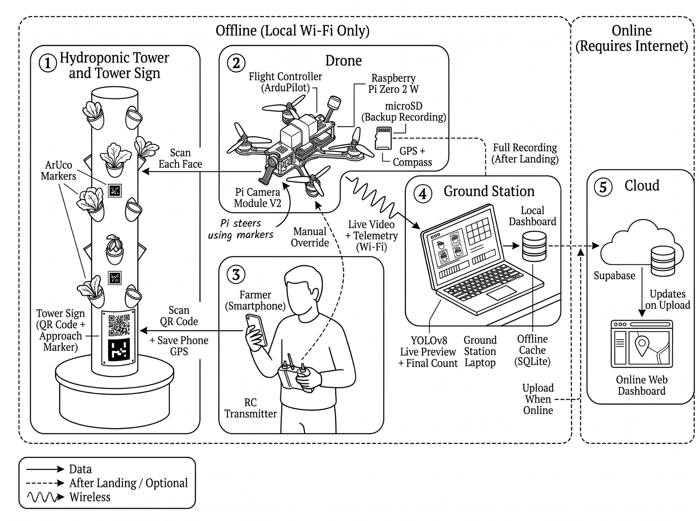

The laptop does the AI
YOLOv8 on a Pi Zero 2 W would be slow and could throttle (Shalash et al., 2026). The Pi only reads markers, ~640×480 at ~10 fps.

Figure 6 · System DesignYOLOv8 on a Pi Zero 2 W would be slow and could throttle (Shalash et al., 2026). The Pi only reads markers, ~640×480 at ~10 fps.
The laptop never sends flight commands. Wi-Fi delay varies, and a late correction near the tower could cause a collision.
Registrations wait on the phone, results in SQLite. The farmer decides when to upload.